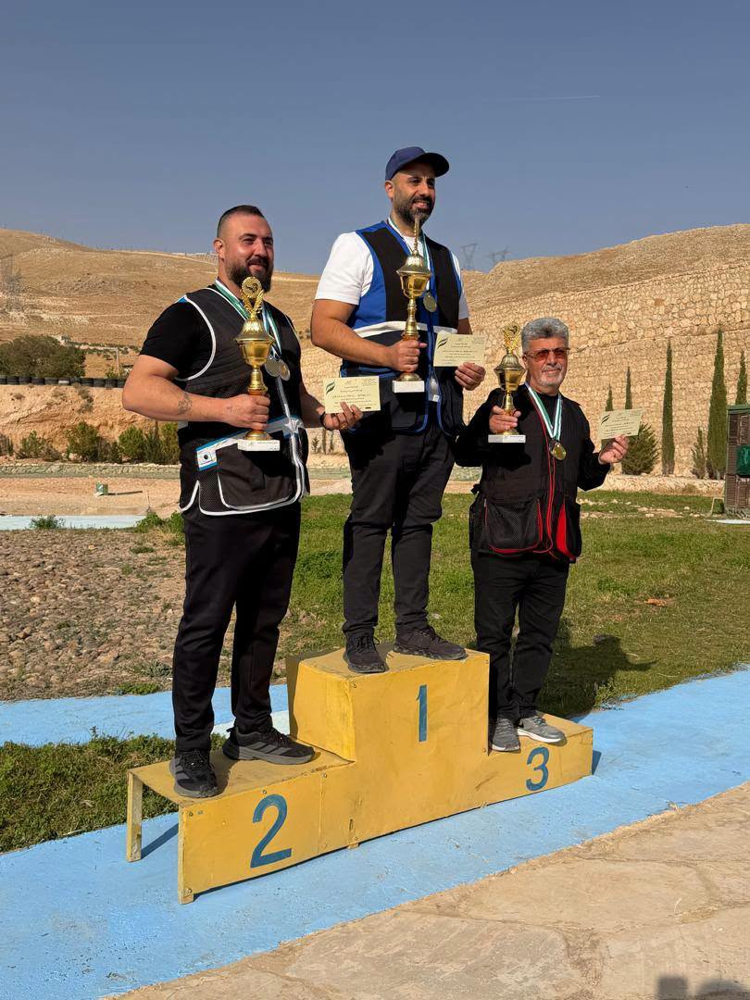
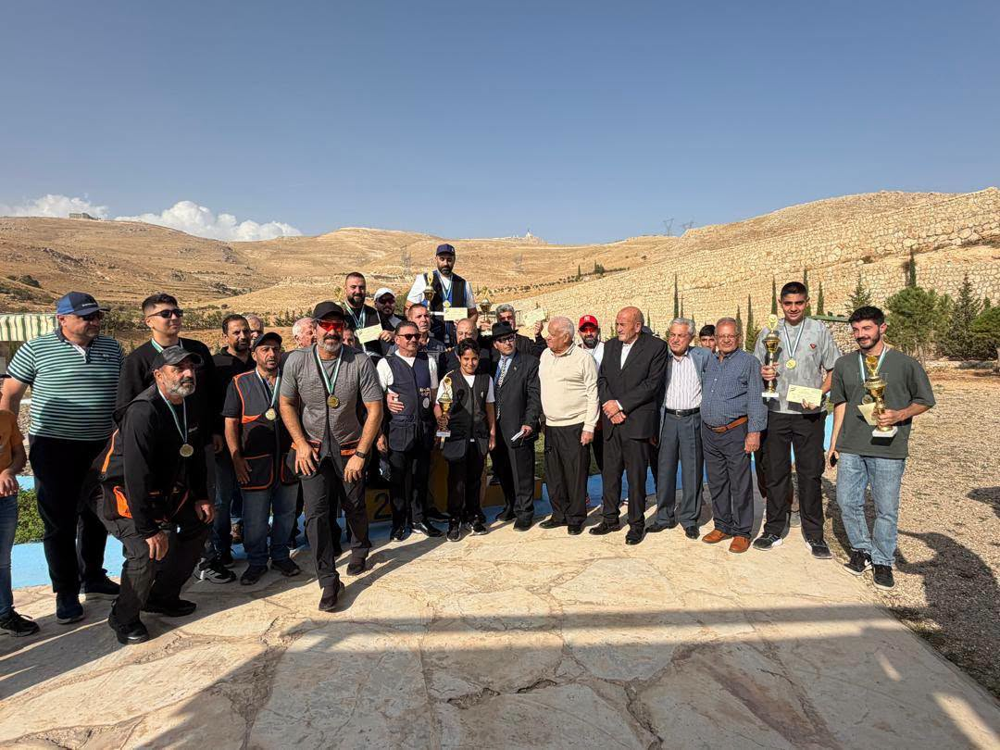

Trente tireurs en catégories A et B et par équipes, en présence de Jamal al-Sharif, adjoint au ministre
Organisé sous le patronage du ministère syrien des Sports et de la Jeunesse, le Championnat de Syrie de tir aux hélices s’est achevé samedi 24 octobre 2026 au club de tir, d’équitation et de chasse de Saydnaya, dans la campagne de Damas, en présence de Jamal al-Sharif, adjoint au ministre.
Disputée les 23 et 24 octobre, la compétition a réuni 30 tireurs sous la supervision de la Fédération arabe syrienne de tir, en coopération avec le conseil municipal de Saydnaya et Ultra Medica Pharmaceutical Industries. Elle comprenait les catégories A et B ainsi qu’un classement par équipes.

Résultats individuels
Ahmad Barqawi a remporté la catégorie A, devant Elie Farah et Walid Hajij. Dans la catégorie B, appelée « Junior » dans le communiqué du club, Rateb Hannoun a pris la première place, suivi d’Alan Andraos et de Zuhair Ajaj.
Classement par équipes et hommage au plus jeune participant
Walid Hajij, Elias Haddad et Maarouf Mawsili ont terminé en tête du classement par équipes. Elie Farah, Shadi Rammah et Razzouk Kalash ont pris la deuxième place, devant Khalil Qazaq, Safwan Tayara et Melhem Qazaq, troisièmes.
Lors de la clôture, Jamal al-Sharif a distingué Adam Moussa, le plus jeune participant au championnat.
Photographies : club de tir et de chasse de Saydnaya.